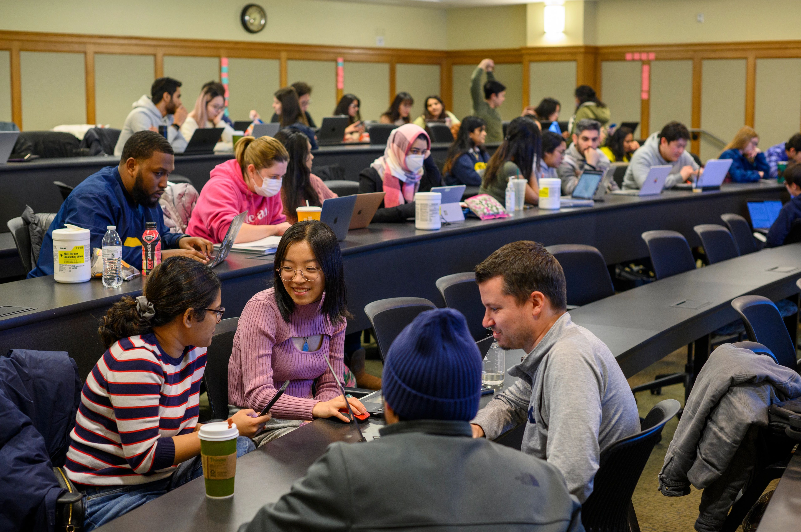

The School of Information offers Peer Tutoring in a variety of subjects across all School of Information classes. Additionally, we offer separate peer tutoring programs for Programming an dMath due to high demand (you aren't alone!). You can view more information about their services at the UMSI Tutoring website.
Programming Peer Tutoring
Programming peer tutoring is currently available for the following classes:
- SI 506: Programming I
- SI 507: Intermediate Programming
- General Programming Support (not class specific)
Math Peer Tutoring
Programming peer tutoring is currently available for the following subject areas:
- Linear Algebra
- Statistics
- General Math Support (not topic specific)
The topics/classes covered by Peer Tutoring are designed to support the curriculum provided by the School of Information.
